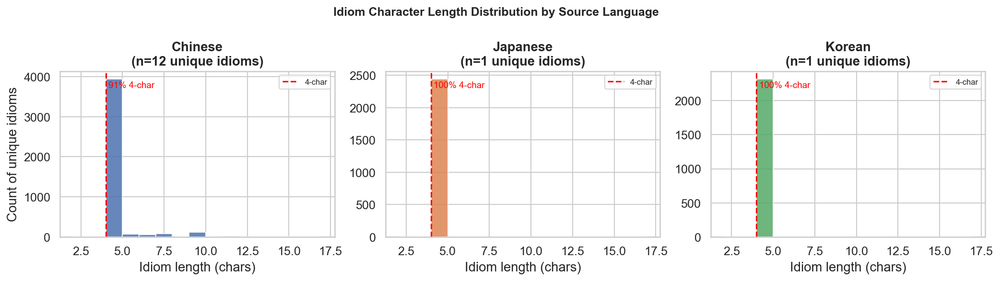
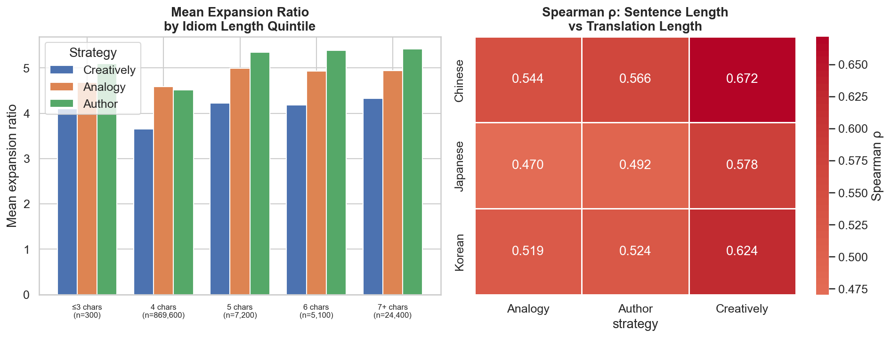
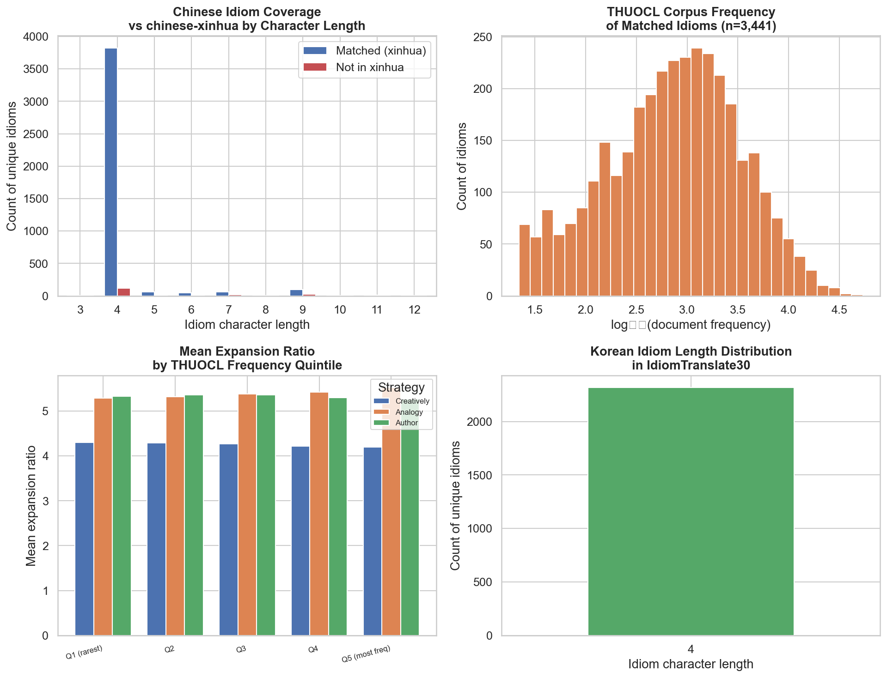
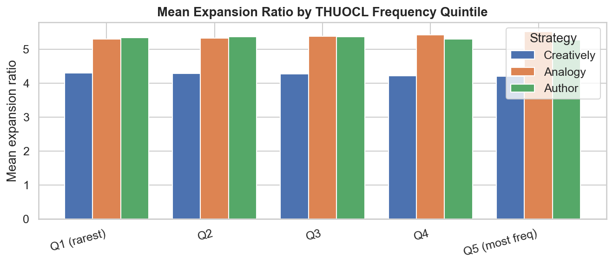
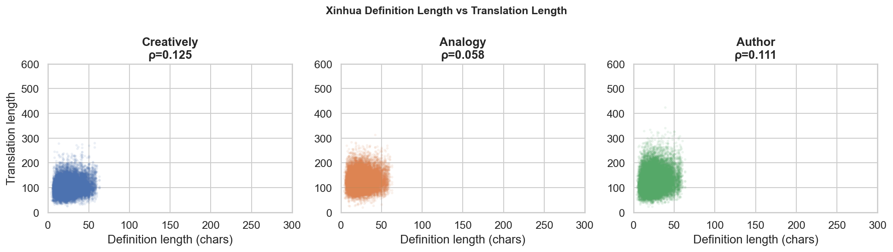
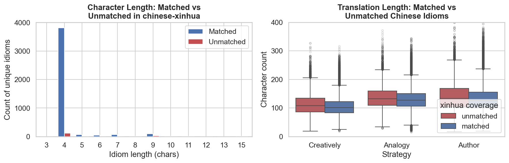
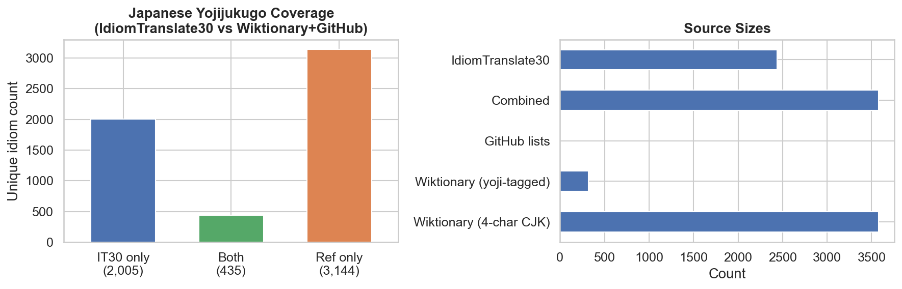
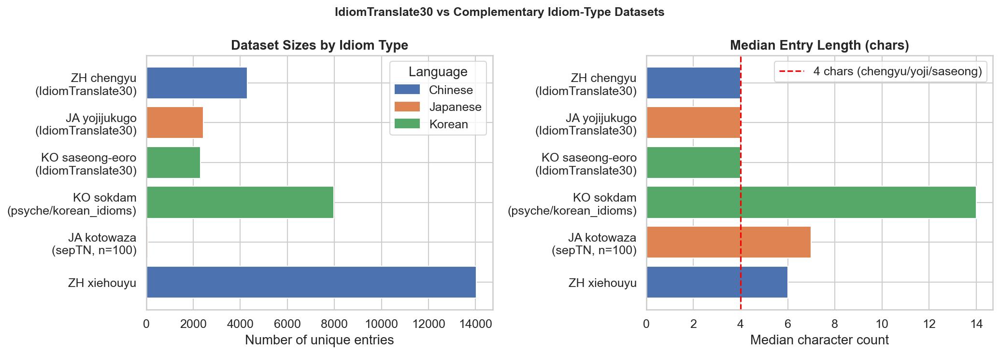

Part 2: Idiom Coverage¶
This part characterises which idioms are in IT30 — their structural properties, how they relate to existing idiom dictionaries, and what categories are intentionally or unintentionally excluded.
Idiom Morphology & Structure¶
| Source language | % 4-character idioms |
|---|---|
| Japanese | 100% |
| Korean | 100% |
| Chinese | 91.4% |
All Japanese and Korean idioms are exactly 4 characters (pure yojijukugo / saseong-eoro). Chinese has an 8.6% tail of non-4-char chengyu. Structurally, IT30 therefore covers a very homogeneous slice of each language's idiom space — the "classical four-character" register — which matters for how we interpret external coverage comparisons below.
Non-4-char Chinese idioms attract slightly higher expansion ratios (4-char: 3.65× vs 7+: 4.33× for Creatively), suggesting that longer surface forms carry more explicable content. Sentence length also predicts translation length (Spearman ρ = 0.47–0.67 across source languages and strategies), confirming that richer context propagates into more verbose translations.


Overlap with External Idiom Sources¶
Given the structural uniformity above, we test how well IT30's idiom inventory aligns with established dictionaries.
Chinese — chinese-xinhua (31k chengyu): - 4,117 / 4,306 IdiomTranslate30 Chinese idioms found in xinhua (95.6% coverage) - 189 unmatched idioms are predominantly non-4-character (only 61.4% are 4-char vs 92.8% for matched) - 86.7% of xinhua is not in IdiomTranslate30, showing significant room for extension
Chinese — THUOCL corpus frequencies (8,519 chengyu): - 3,441 / 4,306 matched (79.9% coverage) - THUOCL-matched idioms produce shorter translations than unmatched ones (Creatively: 102.6 vs 113.7 chars, p ≈ 0), suggesting rarer chengyu require more elaborate explanation - Frequency quintile effect on expansion ratio is weak (Spearman ρ ≈ −0.04 to +0.07)
Chinese — xinhua definition length: - Weak positive correlation between definition length and translation length (ρ ≈ 0.06–0.13), confirming that semantically richer idioms tend to produce longer translations
Korean — psyche/korean_idioms (sokdam proverbs): - 0% overlap — confirmed correct. IT30 Korean idioms are exclusively 4-character Hangul saseong-eoro (사자성어); psyche/korean_idioms contains multi-word sentence-form sokdam (속담) proverbs averaging 10–14 characters. These are categorically distinct idiom types.



Unmatched Chinese Idioms¶
A closer look at the 189 Chinese idioms (4.4%) absent from chinese-xinhua:
- 116 are 4-char, 22 are 7-char, 23 are 9-char.
- 41 / 189 contain non-CJK characters (commas, spaces) — multi-clause proverbs mistakenly included as chengyu (e.g. "前车之覆，后车之鉴", "说曹操，曹操就到").
- The remaining 148 all-CJK unmatched idioms are likely valid but obscure chengyu absent from xinhua's 31k corpus.
- Unmatched idioms produce slightly longer translations (Creatively: 112.7 vs 104.4 chars), consistent with the THUOCL finding that rarer idioms require more explanation.

Japanese Yojijukugo: External Coverage¶
Reference list built from the kaikki.org English Wiktionary Japanese dump (360 MB):
- 3,579 unique 4-char CJK entries extracted; 317 explicitly tagged as 四字熟語/yojijukugo.
- IT30 Japanese ∩ Wiktionary reference: 435 / 2,440 (17.8%).
- 2,005 IT30 Japanese idioms (82.2%) are absent from Wiktionary, suggesting IT30 covers many obscure or classical yojijukugo not in the English Wiktionary — a stronger skew toward rarity than seen for Chinese (4.4% unmatched) or Korean.
- Note: Wiktionary coverage is incomplete; a dedicated 四字熟語辞典 would give a better baseline.

Complementary Idiom Types¶
IT30 covers one specific register per language. To understand what is excluded, three structurally different idiom types were characterised:
- Korean 속담 (
psyche/korean_idioms): 7,984 sentence-form proverbs, median 14 chars, avg 4.7 words. Structurally distinct from saseong-eoro — the 0% string overlap confirms these are categorically separate, not just a different slice of the same inventory. - Japanese ことわざ (
sepTN/kotowaza): 70 entries only (median 7 chars). Rich annotations but too small for statistical analysis; a larger kotowaza source remains outstanding. - Chinese 歇后语 (
chinese-xinhua/xiehouyu.json): 14,032 two-part riddle-sayings, median 6-char riddle portion. Zero overlap with IT30 by design — their riddle-punchline structure is incompatible with the single-sentence context format used in IT30. - Japanese 慣用句 (kan'youku): no freely available dataset found.
The takeaway: IT30 is not a general idiom dataset but a highly specific one — the "classical four-character" genre of each East Asian language — which should be kept in mind when generalising findings.
